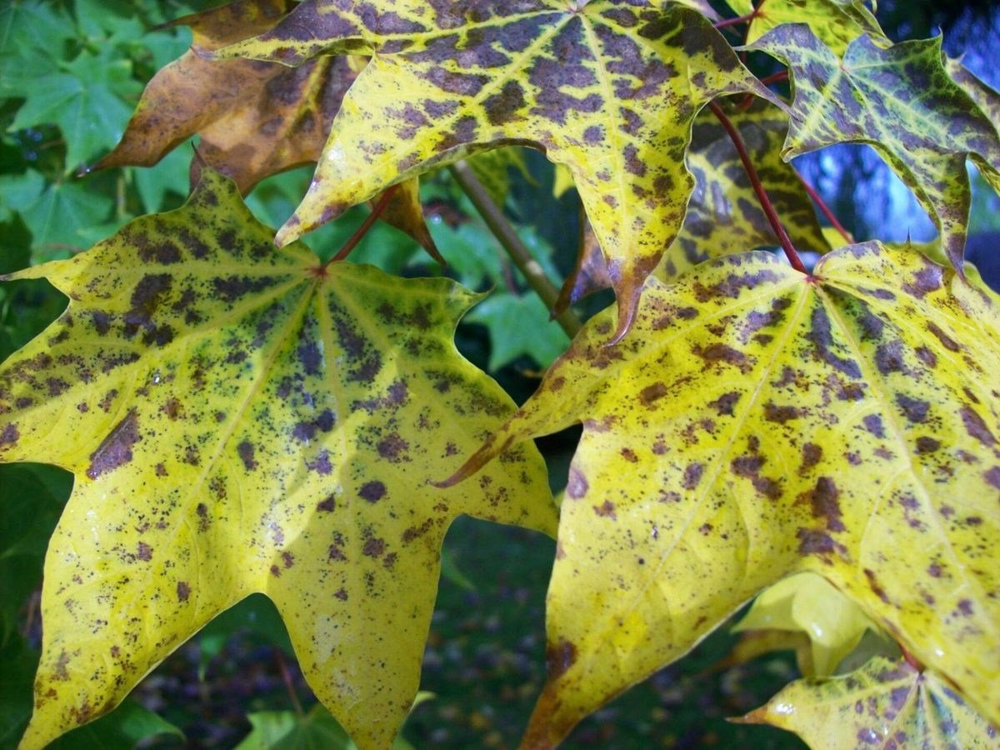
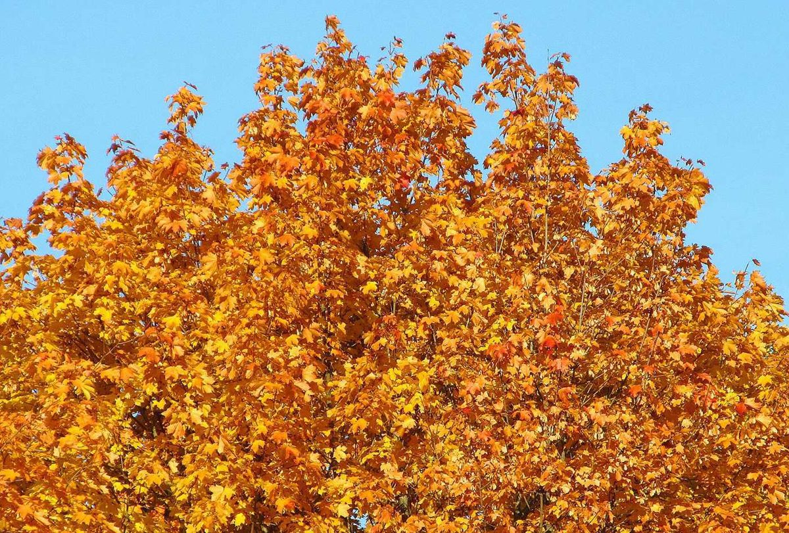

岡山県総社市見延・築約120年の古民家喫茶
古い家に、あかりをひとつ。
家族がつくるような、飽きないおやつを。
喫茶 灯り舎は、築約120年の古民家を店主が自ら改装してひらいた喫茶店です。手作りのおやつとコーヒーで、ゆっくりとした時間をどうぞ。
お店の由来・想い
店主が自分の手で、古い家を喫茶店にした。
紹介記事によると、灯り舎(あかりしゃ)は築約120年の古民家を改装した喫茶店で、2024年12月1日にオープンしました。1階が喫茶、2階は店主のお住まいです。改装は約2年半をかけて店主がご家族と進め、以前は畳敷きだった床を板間に変えてテーブル席を設けたとされています。
手作りのケーキやプリンは「おやつ」と呼ばれ、「派手ではないけれど、家族が作ってくれるような飽きない味」を大切にしているそうです。目の前には槙谷川が流れ、観光地・豪渓へ向かう道沿いにあります。
情報源: 倉敷とことこ / くらしき特盛 / Instagram
店名の意味は確認できていません。「灯り」の写真や配色は、古民家のあたたかい雰囲気に合わせた制作側のイメージです。


メニュー
コーヒーと、手作りのおやつ。
食事の提供はなく、コーヒーとおやつが中心と紹介されています。内容は1〜2カ月ごとに変わることがあるため、最新情報はInstagramでご確認ください。


写真はケーキや飲み物の雰囲気を伝えるフリー素材で、お店の商品そのものではありません。
豪渓のほとり
季節の色を連れて。
観光地・豪渓へ向かう道沿いにあるお店です。木々の色づきを感じながら、ひと息つける場所として思い描いたイメージ写真です。



口コミ
ご来店のイメージ
板間の床と木のテーブルが落ち着きます。ついゆっくりしてしまいました。
手作りのおやつがやさしい味で、コーヒーとよく合いました。
古い家のあたたかさに、時間を忘れてのんびりできました。
上記は制作側が作成した創作のイメージ例で、実在のお客様の声ではありません。
アクセス・ご案内
お店のこと(確認できたものだけ)
| 所在地 | 〒719-1152 岡山県総社市見延１００１ |
|---|---|
| 電話 | 準備中 |
| 営業時間 | 準備中(最新情報はInstagramをご確認ください) |
| 定休日 | 準備中 |
| SNS | Instagram @akari.sha |